NCP-ArchPreview Technical Report: Moving towards Latent Space Language Models through Next Concept Prediction
一作/团队主机构：上海人工智能实验室；上海交通大学 LUMIA Lab。团队署名，PDF 未逐人区分一作所属；按首页首列机构命名。主类别：LLM。首版日期：2026-09-09（UTC）；本轮访问：2026-09-14（Asia/Shanghai）。
论文链接：arXiv:2609.10715。代码状态：官方入口HTTP200，存在性已核验，未运行代码。
1. 背景和问题
标准下一词预测把监督限制在细粒度词元，高层抽象只是间接产物，缺少直接约束多词片段语义结构如何展开的目标。
语言模型已经能在隐藏状态中形成语义、关系和任务结构，但这些表示的产生方式，与训练目标直接要求它学会什么，是两件不同的事情。传统预训练把当前位置之后的一个词元作为目标，长距离依赖只能通过大量这样的局部监督间接积累。即使模型能够在内部构造一个多词概念，也没有独立损失要求它预测接下来的概念变化。本文从这个差距出发，讨论如何把模型自身形成的中间抽象变成可预测、可反馈、可持续训练的对象。这里的“概念”不是人工标注的实体类型，也不是一句自然语言计划，而是若干相邻词元隐藏状态在学习空间中的组合。
这一目标容易与另外两类工作混淆。第一类是压缩计算：把序列按固定片段或动态边界缩短，让昂贵的全局计算发生在更少的位置。只做压缩并不保证较短序列具有明确的未来预测目标。第二类是多词预测：额外预测未来几个词元，扩大监督跨度，但输出仍然绑定词表中的表面符号。NCP同时采用层级计算和概念监督，在较短的潜在序列上预测未来片段表示，然后继续逐词生成。因而它改变的是预训练内部的表示与梯度组织方式，而不是把用户看到的输出接口改造成一次吐出一个无法解释的潜变量。
本文也不是从零提出概念预测这个方向。作者明确把ConceptLM列为直接基础：既有方法已经联合学习乘积量化概念词表，并用下一概念预测约束语言模型；此前从头训练主要验证到较小规模，另有在现成大模型上继续训练的实验。NCP-ArchPreview更重要的增量，是让该路径从预训练第一步就存在，并在8.94B参数、5.73T词元的数据量上持续运行。这个区别影响证据性质：继续训练可以借用原模型已学会的表示，而从头联合训练必须同时解决隐藏空间漂移、概念目标稳定性、梯度反馈和大规模优化问题。
理解结果之前还要区分“离散词表”与“离散输出”。作者确实给隐藏状态建立有限代码本，每个概念由多段代码组合表达；但概念预测头并不选一个最大概率代码作为硬输出，而是把概率分布与代码向量加权求和。因此反馈给词元解码器的是连续向量，概念空间的离散结构主要提供一组受约束的参考基底。这个设计允许词元损失沿概念预测路径反向传播，同时避免引入不可微的采样步骤。把它理解成语言模型内部多了一个传统分类器，或者把所有隐藏状态变成离散符号，都不准确。
作者选择OLMo-3作为对照的好处，是能够在相同分阶段数据和评测协议下观察架构变化。第一阶段使用Dolma 3 Mix，第二阶段使用Dolma 3 Dolmino；模型保持标准因果自回归行为，仍以常规词元负对数似然衡量语言建模质量。但主模型比公开7B骨干更大：编码器和解码器合计保留32层，另插入8层概念模块，总参数约8.94B。因此，摘要中的“更快达到相同损失”首先是一个实测训练轨迹现象，而不是已经排除参数因素的因果结论。论文另外用同参数和同计算量对照进行拆分，这是阅读时必须连在一起的证据链。
本研究需要回答的核心问题可以顺着这条证据链展开：在相同训练词元数下，模型是否更容易优化；在接近计算预算或参数预算时，优势是否仍能留下；更低的词元损失能否稳定转化为下游任务收益；学到的概念词表能否作为预训练之外的轻量适配接口。最后一个问题很有意思，因为它把概念空间从一次性的辅助目标变成可单独更新的模型部件。如果只改少量代码本和预测头就能调整任务表现，架构就提供了一条与传统低秩适配不同的干预位置。但这个位置是否真的减少遗忘，仍要看目标领域和通用能力的共同变化。
实验展示了积极结果，也保留了清楚的边界。Stage-1下游平均分提高2.45个百分点，Stage-2只提高0.59个百分点，并出现代码与部分常识推理任务回落；概念适配在代码、数学和知识上分别产生不同的收益与保持能力。这样的不一致不是需要从笔记中删除的噪声，而是解释架构价值的关键：潜空间目标改善优化，并不等于所有训练配方都能把收益平均分配给所有能力。特别是在训练混合分布发生变化时，总损失可能由占比高的领域主导，少量领域的退化容易被平均数掩盖。
本文目前覆盖的最长训练上下文为8192词元，不能据“概念序列缩短四倍”推断它已经解决超长上下文问题。作者把长上下文扩展列入后续计划；当前证据也主要来自基础预训练和中期训练，而非完整指令对齐后的人类偏好或复杂智能体任务。官方公开入口包括模型集合、推理部署工具与评测代码，本轮仅核验入口存在，没有复现训练或运行检查点。下文的数值均是原论文报告，分析重点放在不同口径之间怎样衔接，以及哪些判断仍需额外实验支持。
另一个容易忽略的背景是预训练目标与评价信号的分工。下一概念预测提供的是隐藏表示监督，而论文用来比较收敛的仍是普通词元损失；只有这样，加入辅助损失的模型与没有辅助项的骨干才有可解释的共同坐标。同样，代码执行正确率、数学答案匹配和参考答案似然各自反映不同能力，分组展示优于直接堆进总分。作者在附录增加按能力划分的固定教师轨迹评估，正是尝试缓解总损失与领域表现脱节的问题。这种代理应理解为训练配方筛选工具，其价值取决于与目标能力的实测关联，而不是因为它来自更强教师就天然可靠。
2. 方法
2.1 三段骨干与概念词表
架构按原文顺序由词元编码器、概念模块和词元解码器组成。前后两段各16层，中间8层，隐藏宽度4096，前馈宽度11008，注意力头数32，词表100278；局部注意力窗口4096，每四层使用一次全注意力，位置编码采用基数500000的RoPE。所有模块共享隐藏维度，但中间模块只处理每四个词元合成的一个概念。下面将原文式1—2写在一起，符号解释：输入序列为 $x_{1:T}$，$h_t$ 是因果编码后的词元状态，$c_m$ 是第 $m$ 个片段的平均状态，$k=4$，$M$ 为有效概念数。实际批处理还需要补齐和掩码，因此不能让填充值进入平均或监督。
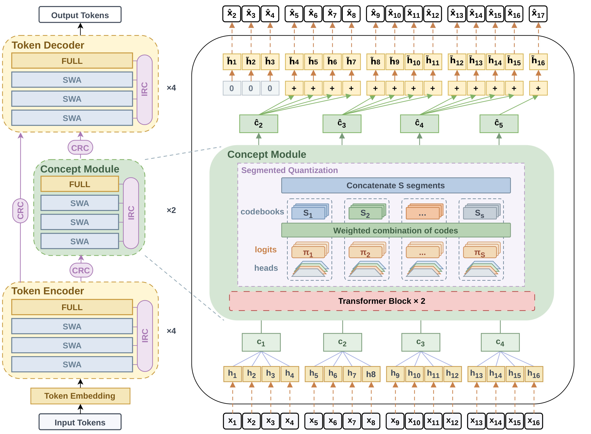
Figure 2应从底部输入向上阅读。左侧的词元路径始终保留原分辨率，编码器与解码器之间并不是把整个序列压缩后再重建；右侧把连续四个隐藏状态汇成一个概念，中部的预测器使用过去概念生成后续概念的表示。黄色词元流与绿色概念流在解码前相加，上方开头三个零显示了因果对齐的关键边界：尚未形成完整历史片段时没有概念反馈。图中四层一组的局部/全注意力结构，与旁边的乘法标记共同说明实际层数，不能把示意图中画出的少数块当成完整模型深度。中间放大的量化区域还表明，预测头给每一段代码本产生概率，经过加权组合再拼接，而不是直接输出一串离散概念编号。紫色IRC与CRC分别表示层内复用和跨模块交换，它们帮助信息跨深度传递，但不会替代原始词元路径。该图支持的直观判断是：计算预算被重新分配到一个更短、但具有独立预测目标的内部序列；模型最终仍逐个词元输出，图中的上层预测也不能提前看到当前目标片段的真实状态。另一个细节是图中代码本和概率预测头都处在词元解码的上游，词元目标能够通过向量期望影响这些组件；离散最近邻则只为代码本拟合提供参考。若把图里的分段量化理解成每次生成必须做硬选择，就会丢失这条梯度通路。概念模块较短的序列还意味着它与词元模块不能直接按位置对接，跨模块残差同样需要池化与因果重复，因此图中的紫色连接与绿色主路径必须一起核验。
连续概念首先按特征维切成 $S=32$ 段，每段128维，每个代码本有 $N=128$ 个条目。原文式3—6可合并为下式，其中 $e_n^s$ 是第 $s$ 段的第 $n$ 个代码，$n_m^s$ 是最近邻索引，$d_m$ 是量化后的参考概念。乘积量化把单个庞大词表拆成多个小代码本，组合容量为 $N^S=128^{32}$，但实际存储的代码向量仅为 $32\times128\times128$ 个标量。组合容量表示可以形成多少组代码，不表示这些组合都已被观测或对应可命名语义；固定四词片段也不保证边界恰好落在短语末尾，语义连贯性由隐藏表示与后续训练承担。
2.2 下一概念预测与因果反馈
概念模块读取历史连续概念，输出未来概念的内部状态，再用分段预测头产生代码概率。原文式7—10中的 $u_m$ 表示用于预测第 $m$ 个概念的隐状态，$\pi_{m,n}^s$ 是第 $s$ 段选择代码 $n$ 的概率，$\hat c_m$ 是最终预测向量。这里softmax权重非负且和为一，所以每一段预测位于相应代码本的凸包中；它不是任意自由回归向量，也不需要执行离散argmax。最近邻量化用于让代码本贴合当前状态分布，预测则沿“概率—代码向量期望”这条可微路径进行，两者职责不同。训练时用真实历史片段的连续状态作为输入，推理时按照原文描述使用已预测概念进行自回归反馈，因此需要注意训练与推理历史的差异，而不能把训练阶段的目标片段直接移到生成路径。
概念向量回到词元流时必须延迟，而不是在片段起点直接广播。原文式11—13设偏移 $\Delta=k$，位置 $t$ 表示预测 $x_{t+1}$ 所用的词元状态，$b_t$ 是可用概念信号，$\tilde h_t$ 是融合状态。以四词为例，$t=1,2,3$ 时置零，在 $t=4$ 已处理完第一段才注入预测的第二概念，用于预测第五个词元；之后同一预测在四个位置重复，再切换到下一概念。对齐规则同时决定信息可见性与缓存更新节奏：当生成不足一个完整片段时，系统不能把未完成片段当作已确认的概念上下文。只验证张量形状正确远远不够，还要逐位置检查目标所依赖的所有状态来自前缀。
2.3 层内与跨模块残差
普通残差只把当前状态与当前块输出相加。IRC允许下一层从更早的中间状态中学习组合：当前块输出 $R_\ell^s=F_\ell^s(H_\ell^s)$ 进入轻量MLP，产生各候选深度的系数；候选集合包含模块最初输入以及迄今所有残差更新后的状态。原文式14—18合并如下，模块标记 $s$ 在此表示编码器、概念模块或解码器，并非前节的量化段编号。$X_{\ell,j}^s$ 是第 $j$ 个候选状态，$w_{\ell,j}^s$ 是对应系数。IRC不使用softmax，所以能表达带符号组合；初始化只选择最近的残差状态，使网络起点接近普通Transformer，随后再学习利用早层信息。这种设计的价值在于让较深模块保留对较浅信息的直接访问，但候选状态的存储与搬运也会带来实际内存成本。
CRC处理的是不同模块之间的信息交换。来源状态 $S_j^u$ 先在序列分辨率上通过池化或重复对齐，再归一化；目标状态 $T_\ell^s$ 产生softmax系数选择来源深度，最后用可学习逐通道缩放 $D_\ell^{s\leftarrow u}$ 控制注入幅度。原文式19—20中的 $K$ 是来源深度数量，$\odot$ 表示逐元素乘法。与IRC不同，CRC的深度权重经过归一化，但最后的对角缩放依然决定实际通道作用。三条路径分别是编码器到概念模块、编码器到解码器、概念模块到解码器；最后一条同样执行概念反馈的因果偏移。缩放以小数值初始化，防止训练开始时新增路径压过骨干。没有这些对齐约束，跨层连接本身就可能成为未来信息泄漏的旁路。
2.4 联合训练及梯度路径
训练目标由词元预测、概念预测和代码本拟合组成。原文式21—22如下，$\operatorname{sg}$ 表示停止梯度，$d_m^s$ 为最近邻代码，$\hat c_m$ 由过去概念预测。VQ项只把选中的代码向当前连续概念拉近，不会借此把编码器状态硬拉向代码本；NCP项把目标连续概念停止梯度，但过去概念仍是可微输入，因此编码器可经历史路径获得预测性监督。这是全文最重要的梯度区别：目标分支冻结不等于整个编码器冻结，也不等于预训练只更新概念模块。NTP还通过注入概念的解码路径更新预测头及相关权重，使概念空间不仅贴合隐藏状态，还必须对最终词元生成有用。
原文式23—24的 $\alpha,\beta$ 控制两种辅助目标强度，不能把总损失当成实验中用于比较的词元语言建模损失。还存在一个需要复现者认真处理的表述差异：正文式22对完整概念向量求平方误差，仅除以 $M-1$；附录Algorithm 1第21行先按分段累加，再额外除以 $S$。若维度求和口径相同，二者相差32倍，必须核对公开实现中的归一化与实际权重，而不能自行挑一个写成已经确认的训练配置。这里保留正文公式，并把该差异记录为未解决的实现核验项。它未必意味着训练有错误，但会直接影响照着公式重建时的梯度尺度。
矩阵参数使用Moonlight Muon，其他参数采用AdamW。原文式25中 $O_t$ 是正交化后的更新，$\eta_t$ 是学习率，$\lambda_{\mathrm{Muon}}$ 为更新缩放，$\lambda_{wd}$ 为权重衰减，$d_{in},d_{out}$ 为矩阵维度；默认学习率为 $6\times10^{-5}$，采用与骨干一致的余弦调度。维度缩放的意义是把矩阵方向更新调整到适当尺度，而不是改变概念损失的定义。主实验保留层级Q/K归一化以控制比较变量；按头归一化只出现在稳定性干预实验中，因此不能把该干预的效果算入主结果。训练中需要同步观察词元损失、概念目标、代码分布与注意力异常，单看最终平均损失无法区分表示学习改进和数值行为变化。
3. 实验结果
3.1 同数据收敛：节省词元不等于节省一半训练时间
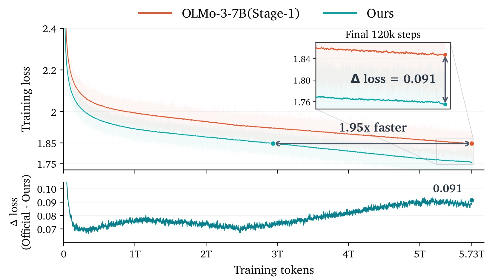
Figure 1这里单独保留原始子图(a)，横轴是训练词元数，纵轴是词元语言建模损失，底部小图是两条曲线差值。NCP-ArchPreview与OLMo-3-7B在相同5.73T词元上训练，到末期前者低0.091；它在使用51.3%的总词元时达到后者最终损失，换算约2.94T词元。图中的1.95倍是这个样本进度比值，而非吞吐率测量，也不意味着每步耗时相同。绿色曲线更低只能直接支持相同数据进度下优化更好；因为模型增加了参数与分支，训练总成本仍要乘以每词元计算量并考虑实现效率。差值从早期就存在、后期继续扩大，说明收益不只是最后一小段学习率下降造成。末120k步的放大区域让最终差距可读，但图中的短期抖动并不提供不同随机种子的方差估计。原图(b)另报告Stage-2达到基线末期损失使用66.2%词元、末期差0.027，对应1.51倍词元收敛比；该阶段约100B词元，数据分布已经变化，不能把两阶段比值机械相乘，声称全流程获得更大加速。
评测遵循固定提示模板、示例选择、停止词与评分实现，随机种子为42。MMLU和多项选择任务主要采用5-shot；GSM8K使用8-shot单样本，MATH-500使用4-shot、每题32次生成，HumanEval和MBPP为3-shot、每题32次生成，报告的是对应pass@1估计而非把32次任一成功当作pass@32。数学答案使用任务对应的抽取和等价规则，代码在隔离环境执行官方测试。Gold类似然任务则对参考答案teacher forcing，按UTF-8字节数计算BPB；它们衡量参考完成的概率，不能与自由生成正确率混成一个百分比分数。
论文图中的两条主曲线比较的是词元目标，而不是把概念误差和量化误差也加进来的联合目标。这一点保证纵轴有共同含义，否则新增辅助目标会改变损失单位，跨架构高低就无法解释。达到同一损失所需词元更少，也没有回答达到同一数学或代码分数需要多少训练预算，后者必须用检查点下游评价单独建立对应关系。
3.2 两阶段主结果：平均提升与领域退化并存
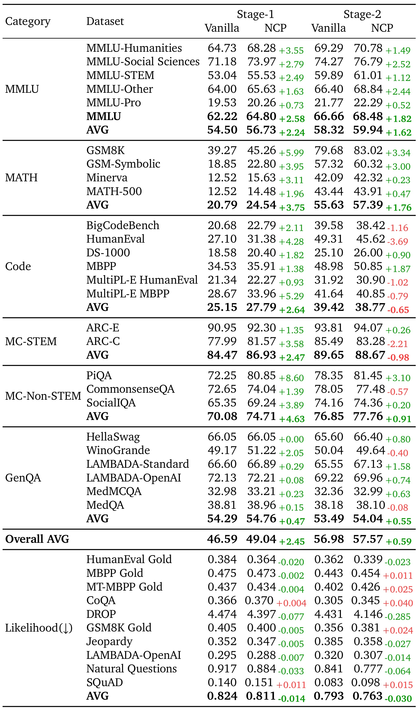
Table 1同时列出两阶段、各领域和似然区，最重要的阅读规则是上下两种方向不能混淆。上半部26个基础任务的未加权均值形成Overall AVG，MMLU汇总行和中间AVG行不重复计入；它不是六个领域均值再平均。下半部十个BPB任务单独聚合，越低越好。Stage-1整体从46.59提高到49.04，增加2.45个百分点；GSM8K由39.27到45.26，增加5.99个百分点，数学组均值20.79到24.54，代码组25.15到27.79，非STEM常识组70.08到74.71。PiQA增加8.60个百分点，是一个明显正例；HellaSwag保持66.05，说明收益并不均匀。Stage-2整体56.98到57.57只增加0.59个百分点，数学仍改善，但代码均值39.42降至38.77，其中HumanEval下降3.69个百分点，BigCodeBench下降1.16个百分点；ARC-C下降2.21个百分点，导致STEM选择题组均值下降0.98个百分点。BPB均值在两个阶段均改善，但Stage-2的MBPP Gold、MT-MBPP Gold、CoQA等仍变差。因此，“几乎所有任务提高”只能谨慎限定在主要Stage-1观察上，不能推广到完整表格或第二阶段。保留整个表而非只裁Overall AVG，正是为了让这些反例与正向结果共同可见。
作者把第二阶段代码回落与混合数据中代码比例只有约10%联系起来：模型更好拟合总体混合分布，可能同时降低弱势领域表现。这是合理解释，但当前表格没有隔离“代码占比”这一单变量，所以不能写成已证明的因果。附录检查点矩阵也表明长期趋势向上并非每次评估都单调：Stage-1均值从100k检查点39.64到最终49.04，中间存在48.05到48.00等小幅回落；部分BPB分数也有明显波动。实际选择检查点需要按目标能力监控，而不是把单一训练损失曲线当成所有任务的充分统计量。
附录还明确规定，多语言代码的两个生成测试先在六种编程语言上等权平均，再作为各自一个基础任务进入代码组；似然区的多语言参考代码则先对十七种语言等权平均，再与其他九个类似然任务平均。因此，表中的“平均”已经包含不同层级，不能按可见行数重新做一次未经定义的平均，也不能让语言子集数量改变总体权重。
3.3 对齐与消融：把容量、计算和目标拆开
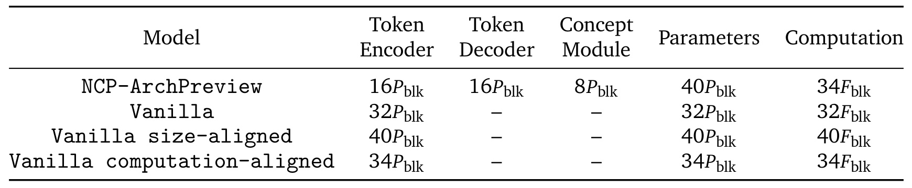
Table 2为主结果补上公平比较所需的坐标。一个普通Transformer块记为 $P_{blk}$ 个参数、$F_{blk}$ 的计算，标准骨干有32块；NCP保留32个词元层并增加8个概念层，所以约有40块参数。因为概念模块每四词只运行一个位置，8个概念层的计算近似折合2个词元层，总计约34块。因此同计算基线为34层普通模型，同参数基线为40层普通模型。这里的85%由 $34/40$ 得到，比较对象是40层同参数模型，并不是原公开32层骨干。反过来，NCP对32层基线的理论计算比约为1.0625，说明新增结构并非完全免费。表中暂忽略代码本和残差小组件的成本，计算对齐本身也是解析近似；注意力的序列长度依赖以及运行时访存仍会影响真实耗时。这个表最有价值的地方，是把“更大模型更好”与“用较短内部序列部署额外容量”区分开，让后面的损失曲线能回答更具体的问题，而不是仅用8.94B对7B的单点对比宣布架构优越。
同参数对照中所有四十层都在词元分辨率工作，而概念模型只有中间八层在较短序列上工作，这就是参数预算相近而计算预算不同的来源。表中分配不是把编码器或解码器删薄来换取概念层，因此仍保留原始三十二层词元建模容量。
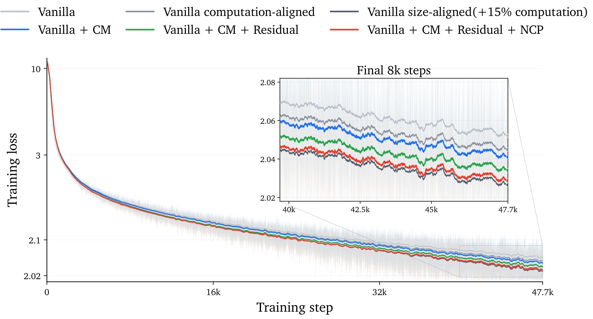
Figure 3使用相同训练配方和前200B词元，对比三种普通骨干与逐步增加模块的三种配置。添加概念模块后词元损失降低，加入分层残差继续改善，最后增加NCP目标得到进一步降低；因此整体收益不能只归因于单独的辅助损失，也不能把残差改动视为无关实现细节。右上角放大最后8k步后，可以看到完整NCP优于计算对齐的34层普通模型，并接近参数对齐的40层模型。这里的措辞是“接近”，并非明确全面超过同参数基线。图还提示只有加入额外容量的一部分收益来自NCP目标，其余来自层级计算和深度路由；如果只拿最终红线对最初灰线做差，会把多个变化混在一起。200B消融相对于5.73T主训练是较短范围，能够支持这一训练设置下的组件增益，但没有直接证明所有对照在完整训练终点仍保持相同间隔。图中损失轴和局部放大用于辨认细小差异，不应该从视觉斜率推算墙钟或GPU利用率，也没有足够随机种子证据把每一条微小间隔解释成统计显著结论。
实验横轴约四万七千七百次更新，放大窗只截取末端约八千次，作用是排除早期大范围下降对小间隔的遮蔽。蓝色概念模块配置尚未包含最后的独立概念损失，已经改善普通骨干，说明缩短序列上的额外变换本身就有用；绿色再加入残差，考察跨层信息通路；红色最后增加概念目标，才更接近同参数普通网络。这个顺序对解释十分重要，因为逐步添加只证明增量组合在该顺序有效，没有给出所有模块排列的完整交互实验。例如，没有独立的仅残差、无概念模块方案与所有损失组合覆盖，就不能把三次降幅当作三个模块在任意架构上彼此独立、可直接相加的贡献。
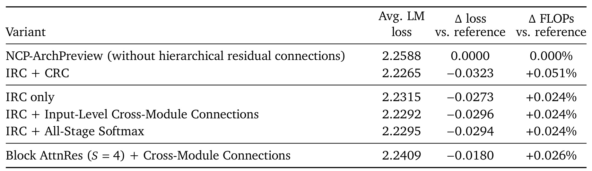
Table 3把残差结构进一步拆开，范围是1B模型、150B训练词元，损失取最后200条日志平均。没有分层残差时为2.2588，IRC降到2.2315，差为负0.0273；完整IRC加CRC降至2.2265，差为负0.0323。只在输入层增加跨模块连接得到2.2292，已接近完整结构，但完整CRC还能再改善约0.0027。全阶段softmax方案为2.2295，表明是否允许带符号的深度组合不是所有收益的唯一来源；Block AttnRes加跨模块连接为2.2409，改善小于IRC路线。解析额外FLOPs分别只有约0.024%到0.051%，看起来很小，但作者明确说明没有计入来源状态物化、内存流量、归约和小内核启动开销。因而这个表支持的是“少量额外张量收缩带来损失改善”，不能直接改写成“真实训练性能没有代价”。其范围也不同于前一个8.9B级架构对照：残差细分结果来自1B实验，跨规模迁移需要额外测量。完整列出多个替代残差方案有助于判断收益来自历史状态访问还是特定权重约束，同时也暴露不同方案之间小幅差距需要重复实验确认。
表中输入级跨模块方案只增加三个嵌入层之间的连接；完整跨模块路由则让目标位置对来源的不同深度进行选择，因此两者不能笼统合并为“有跨模块残差”。单独层内路由已经拿到大部分损失下降，说明早层状态复用是该规模下的主要信号；完整跨模块结构进一步降低损失，说明仅靠入口处交换还不能完全替代逐深度的信息访问。全阶段归一化方案与输入级方案的差距只有万分之几，在没有重复种子区间时尤其应避免给出强排序。块注意力残差采用四层为一块的组织方式，其结构粒度和历史访问形式也不同；表格能比较这一具体实现，不能据此否定所有按块残差方法。
3.4 缩放与稳定性：解析计算优势的适用范围
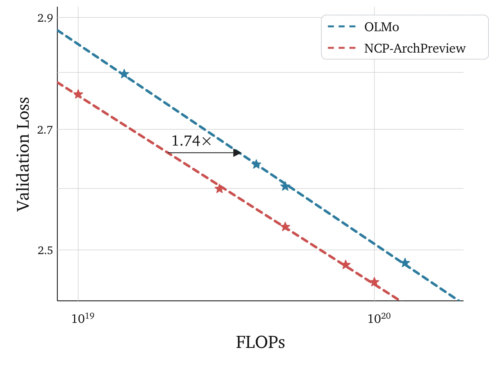
Figure 4比较固定计算预算下找到的最佳验证损失，而不是把所有模型都固定为同一参数规模。作者在约 $10^{19}$ 至 $10^{20}$ FLOPs的多个预算上搜索模型大小、训练词元分配和学习率，再用最佳点拟合曲线；横向的1.74倍表示在拟合的相同验证损失附近，两条计算最优曲线所对应预算的比例。由于概念模块不是逐词运行，附录采用 $C=F_{tok}D$ 计算总预算，$F_{tok}$ 是解析每词元训练FLOPs、$D$ 是训练词元数，并排除嵌入参数。直接使用常见的参数量乘数据量近似，会把低频激活的概念层当成每词都完整运行，从而误计结构成本。附录IsoFLOP曲线与配置表显示，每个预算的最优点依赖模型与数据分配，预算增加时适合的宽度和深度也发生变化。这让结果比单一规模对比更强，但1.74倍仍来自有限预算范围的搜索与拟合，不能无条件外推到更大模型、不同硬件或更长上下文。尤其是搜索点选择了各自最优学习率，若复现预算不允许同等搜索，实际能够达到的收益可能不同。
附录的搜索表提供了怎样得到这些最佳点的具体例子：在最低预算下，更小的每词元计算允许处理更多数据，但验证损失并非因此最低；增加模型计算、减少训练词元后，损失先改善，再进入较平坦区间。到最高预算时，最优附近采用更宽且含较多概念层的模型，再继续增加每词元计算反而因为数据量减少而损失回升。这是固定预算内模型和数据的真实权衡，说明曲线不能简单解释成“加深概念模块总是有效”。作者先对代表模型搜索学习率和批量，再在同预算其他模型附近搜索学习率，最终记录各点搜索到的最低验证损失。拟合结果因此依赖这套探索范围，而不是一个无需调参就自动成立的理论最优界。
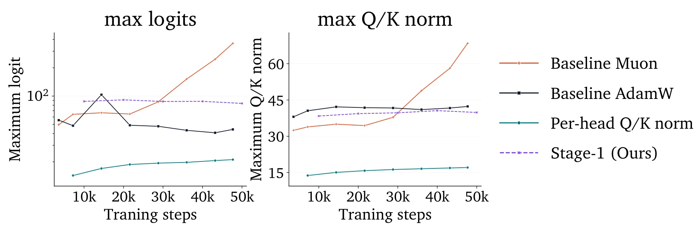
Figure 6展示最大注意力logit和最大Q/K范数随训练步数变化，图例同时保留Muon基线、AdamW基线、按头Q/K归一化和NCP Stage-1。Muon基线的两类极值持续增长，按头归一化则保持较低水平。作者的解释是，整矩阵Muon更新会耦合多个头，而按层归一化只控制总体尺度，少数头可能逐渐占据过大范数，形成很尖锐的注意力分布；按头约束能直接限制这种离群。对应的原始诊断图还观察到logit增大与梯度峰值同时出现，但共现本身不足以证明所有不稳定机制。重要的是，普通Muon基线已经复现异常，说明不能把不稳定简单归罪于NCP概念分支。更不能把按头归一化的平稳曲线当成主模型训练方式：作者为了保持与OLMo的控制比较，主实验仍用原来的按层Q/K归一化，按头版本只是干预分析。对实现者而言，这提供了一个有价值的可测假设，但切换优化器或归一化后应重新跑对齐实验，因为优化稳定性改善也可能改变最终损失和能力比较。
原文诊断进一步区分了最大绝对logit、最大正logit和层内高分位统计，并检查归一化后的头级范数热图，目的在于确认异常是否集中于少数头，而不是所有头均匀放大。最大值对离群特别敏感，所以仅看平均范数可能漏掉使注意力饱和的局部通道。按头干预同时压低范数极值和logit极值，与作者关于少数头主导点积的解释相符；然而这组短程比较没有直接测量改变归一化后最终通用能力是否完全不变。它主要验证训练数值现象可被稳定化，而非证明干预对所有最终指标都有净收益。对照曲线中的概念模型较普通矩阵优化基线平稳，也提示架构与优化器之间可能存在交互，需要把异常定位和能力对比作为两个实验分别开展。
3.5 三种领域适配：17M接口的收益与遗忘
领域适配从对应Stage-1检查点继续训练，代码用Magicoder，数学用Orca-Math，知识用TriviaQA-RC。Full更新全模型约8.9B权重，LoRA与VQ都训练17M参数；LoRA新增17M参数，而VQ只更新原有代码本和概念预测头、冻结词元骨干，因此不增加模型总参数。这里的“VQ训练”不应缩写成只改最近邻代码向量，因为预测头也在17M范围内。主表与适配表的起始分数略有不同，尤其代码使用EvalPlus扩展测试、附录指定对应评测检查点，因此应在各适配表内部计算增量，不能直接拿Table 1终点代替它们的基线。
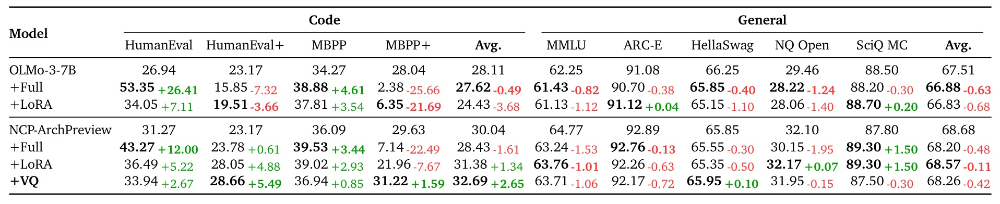
Table 5最值得注意的现象是原始代码测试和强化测试可能给出相反信号。NCP全参数适配让HumanEval增加12.00个百分点，但MBPP+下降22.49个百分点，最终代码均值从30.04降到28.43；LoRA代码均值提高1.34个百分点，但MBPP+仍下降7.67个百分点。VQ则在四项代码任务上都改善，HumanEval、HumanEval+、MBPP、MBPP+分别增加2.67、5.49、0.85和1.59个百分点，均值达到32.69，提高2.65个百分点。因而在这个特定数据与测试组合中，较小的结构接口比全面更新更稳健，但它不是没有副作用：通用均值68.68降到68.26，下降0.42个百分点，MMLU、ARC-E、NQ Open和SciQ都出现不同程度回落。对照OLMo的Full与LoRA也能看到强化测试退化，说明新数据干扰既有代码能力是一个更广泛的问题。表格支持VQ对这组代码任务取得更均衡的改善，却没有证明这种适配在所有编程分布都能压过低秩方法。全参数和低秩策略的失败也可能与数据配方、训练强度有关，不能据一次设置宣告它们在架构上无效。
从同表的普通骨干对照看，全参数适配把原始代码生成测试中的一个分数大幅抬高，却同时让强化测试跌到很低，导致四任务均值仍略降；低秩适配的强化测试回落更明显，均值下降更大。这让“训练后生成看起来更像代码”与“代码能经受更严格测试”之间的差别具体可见。概念适配只在原有接口内移动，四个任务的提升幅度较温和，却没有用大幅牺牲某一测试来交换另一个测试的跃升。右侧保留五个通用任务还揭示，平均下降并不是所有通用任务都变差，部分任务小幅上升抵消了其他任务的下滑。因此，复现时既要保留原始测试和扩展测试的共同验收，也要观察通用任务的逐项变化；只报告目标代码均值或只报告可训练参数量，都无法重现这张表支持的稳健性判断。
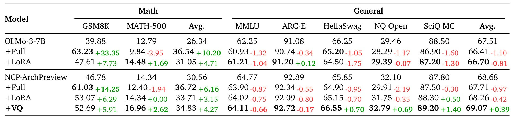
Table 6呈现另一种权衡。NCP数学均值从30.56出发，Full达到36.72，增加6.16个百分点；LoRA达到33.71，增加3.15个百分点；VQ达到34.83，增加4.27个百分点。VQ既改善GSM8K也改善MATH-500，后者从14.34到16.96，而Full虽然让GSM8K大幅增加14.25个百分点，却让MATH-500下降1.94个百分点。通用均值方面，VQ增加0.39个百分点，LoRA下降0.42，Full下降0.97。所以VQ在本表同时超过LoRA的目标均值与通用均值，但没有取得最高数学均值；它比Full少1.89个目标领域百分点，换来高1.36个通用平均百分点。这个比较不能只保留“优于LoRA”，还要保留更高目标分数与保持能力之间的选择。表中通用均值增加也不表示每个任务都上升，VQ的MMLU和ARC-E仍略降，HellaSwag、NQ Open和SciQ的增长补偿了它们。对于需要稳定已有能力的模型更新，平均保持与逐任务保持应分别验收；不能把正的通用均值当作没有任何遗忘的证明。
普通骨干的数学适配对照也体现了任务间不一致：全参数策略提高小学应用题成绩，却降低更难数学题集合的分数；低秩策略对两个目标任务的变化相对均衡，但最终目标均值仍低于概念模型的低秩版本。两种骨干适配前的目标均值不同，因此比较新增方法时，既要报告相对各自起点的变化，也要保留绝对终点，不能把增量更大直接理解成模型更强。概念模型的全参数方案对通用集合的五个任务全部有回落，而概念接口方案在其中几项出现正增益，这才构成这里讨论保持能力的依据。不过，通用集合仅覆盖表列五项，正均值并不能证明其他未测能力同样保留，也没有证明保持效果能承受连续多轮适配。若后续训练继续加大数学数据占比，目标收益与遗忘之间的次序可能再次变化，需要沿训练步数记录两者轨迹，不能只用一次终点评估固定策略优劣。
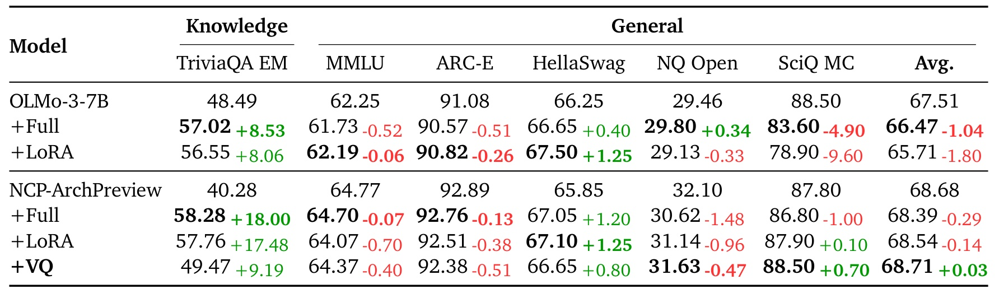
Table 7说明小接口的可塑性也有上限。NCP知识适配前TriviaQA准确匹配为40.28，VQ后49.47，增加9.19个百分点；Full和LoRA分别增加18.00与17.48个百分点，明显更大。与此同时，VQ通用均值68.68到68.71几乎不变，而Full和LoRA分别下降0.29与0.14个百分点。作者据此提出，冻结骨干中的前馈层会限制对已有事实关联的直接改写，概念词表更适合调整已有表示的利用方式。这是与已知事实存储研究相容的机制解释，但本实验没有逐神经元因果干预，所以不应说它已经证明知识必然存储在某一组固定位置。还要注意原始OLMo的TriviaQA为48.49，高于NCP的40.28，说明预训练总体领先并不等于每项知识任务起点领先；适配后NCP Full达到58.28，才超过对应OLMo Full的57.02。把最终值、相对提升和基线起点放在一起，才能避免因低起点造成的增量优势被误读为绝对能力优势。对知识更新而言，VQ展现的是较温和的改变与较小平均干扰，不能替代所有需要大规模注入新事实的训练。
右侧的科学知识选择题给出了一个可见的遗忘反例：普通骨干进行全参数和低秩知识适配后，该任务分别明显下降，幅度比其他通用任务更突出，带动总体保持分数变差。概念模型对应更新的下降较小，而仅更新概念接口在该项略有提高，但它的其他通用指标仍有微小回落，所以“几乎不变”仍是平均层面的描述。知识目标使用训练数据对应领域的准确匹配，通用集合同时含开放域问答和多项选择，因此它们对答案形式与事实检索的要求不同。作者关于冻结前馈事实关联的解释可以用来指导后续消融，例如区分改预测头和改代码本的作用，但现有表格没有独立拆开这两部分，也没有追踪具体知识条目被保留或改写的位置，暂时只能把机制视为待进一步验证的假设。
3.6 适配效率：实际吞吐证据与预训练曲线不同
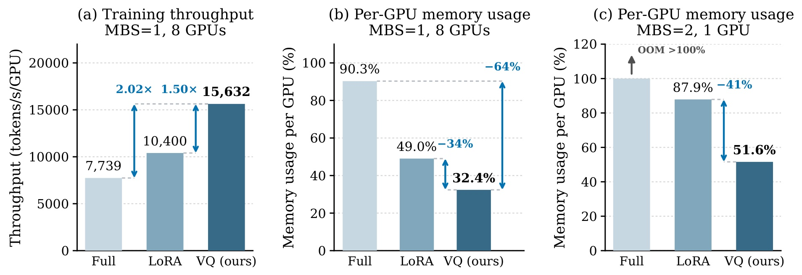
Figure 7与前面按词元进度比较的训练图不同，这里确实测量了适配训练吞吐。左图在8张GPU、微批量1时，Full为7739词元每秒每卡，LoRA为10400，VQ为15632，VQ相对Full约2.02倍、相对LoRA约1.50倍。中图在同设置下给出每卡显存占容量比例：Full90.3%，LoRA49.0%，VQ32.4%。右图切换为单卡、微批量2，Full超出容量，LoRA87.9%，VQ51.6%。因此，相同可训练参数个数不保证相同吞吐与显存，更新位置、反向路径和需要保存的激活都会影响成本。这里VQ只修改架构已有的小接口，能减少更新骨干所需的计算与存储，但这些数字属于论文给定适配设置，不能代替从头预训练的速度，也不能拿单卡显存比例反推另一种GPU上的绝对GB容量。图中的节省比例是相对比较，微批量和卡数变化后不能直接横向混算吞吐。当前结果足以支持其作为轻量适配候选，但部署选择还要结合前面三张表的目标能力和通用能力变化，不能仅凭最高训练速度决定最合适的更新策略。
三个面板共同说明，参数高效训练有两个不同资源维度：优化器状态与可训练权重的规模是一部分，反向传播经过哪些层、需要保留多少中间激活是另一部分。低秩方法虽然只优化少量参数，新增模块分布在骨干内部，仍可能需要较长的反向路径；更新概念接口的路径结构不同，因此同为一千七百万可训练参数却不具有相同资源占用。论文在两个微批量条件下展示显存余量，说明较低占用有机会容纳更大批量，但没有给出把批量增大后的最优吞吐曲线，不能据此推算额外的速度提升。全参数单卡超容量只说明当前这一配置无法运行，也不排除激活重计算、分片或卸载能改变可行性；这些替代配置并未在此图中作为同口径对照测量。
3.7 多词预测与草稿：两类额外信号可以叠加
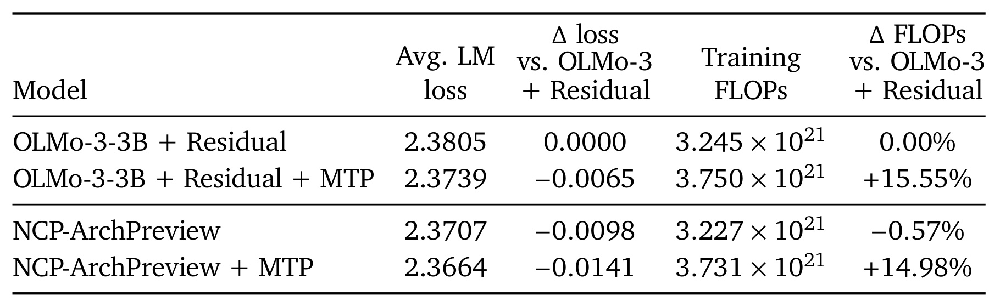
Table 8使用3B级受控架构和前150B词元，普通OLMo先增加相同位置的残差结构，再比较有无额外MTP层，以减少残差差异的干扰。普通残差对照的区间平均词元损失为2.3805，加MTP后2.3739；NCP不加MTP为2.3707，同时解析训练FLOPs比该普通残差对照少0.57%；NCP再加MTP降到2.3664。这里NCP的改善大于只添加一个MTP层的改善，而两者一起使用仍有额外收益，说明概念层预测并非只是对已有多词预测目标的重复。MTP层预测两位置之后的词元，损失权重0.3，依然提供表面词元监督；NCP面向片段表示，监督粒度不同。成本也需要同时读：普通对照加MTP增加15.55%解析FLOPs，NCP加MTP相对普通残差基线增加14.98%。所以“可以叠加”不表示无额外训练计算。原始轨迹图在约2285次更新附近出现NCP超过普通MTP版本的交叉，末期排序与表格均值一致；本表统计的是整个150B训练区间平均，而不是最终单点损失，不能与前面最后200条日志的残差消融数值直接比较。
在草稿实验中，基线结合DFlash2的相邻位置动态卷积与路径选择，以及DFlare的逐层目标状态组合。新增概念信号来自已验证前缀中最后完整片段，注入草稿每层每个提议位置。原文式26—27可写为下式：$s_{t,j}^{(\ell)}$ 为原草稿状态，$g^{(\ell)}$ 是零初始化门控，$c_{\lfloor t/k\rfloor}$ 为可因果使用的概念，$K=16$ 为提议长度。MAL中 $c_r$ 是第 $r$ 轮实际提交词元数，包含目标模型修正或奖励词元，因此不等于单纯通过校验的草稿数；$R$ 为验证轮数。
两种架构的残差布局也经过专门对齐：普通模型按八、一、七层分组，概念模型采用八层编码、四层概念、七层解码，避免把新增跨模块连接的收益再次算成概念目标收益。即便如此，这仍是指定结构下的控制比较，并非所有多词预测深度与权重都已穷举。
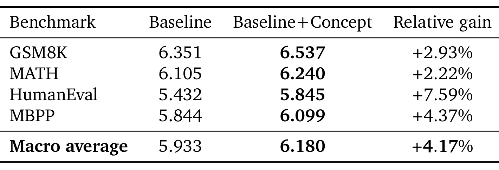
Table 9显示四个任务的MAL都提高，宏平均从5.933到6.180，绝对增加0.247，按相同宏平均之比计算相对增长4.17%。HumanEval的相对改善最大，为7.59%；GSM8K、MATH、MBPP分别为2.93%、2.22%、4.37%。新增模块只给1.1B草稿模型增加0.04M参数，不需要额外目标模型计算；两组使用相同目标在线蒸馏、数据顺序、随机种子和训练预算，序列长度8192、每序列512个锚点、全局批量512，把固定5B词元子集重复十轮。这个设置支持概念表示给并行草稿提供了补充上下文，但4.17%是平均接受长度增益，不能自动改写为端到端推理吞吐提高4.17%。实际速度还取决于草稿前向耗时、验证开销、缓存访问、批处理规模，以及每轮完成的词元数量如何分布。精确投机验证保证输出仍经过目标模型检查，因而增加概念信号首先改变的是草稿与目标的一致性，而不是随意放宽验收标准。对工程跟进最有意义的下一步是测量真实请求延迟分位数与每秒输出词元，确认更长接受长度能够覆盖新增路径的运行代价。
四个任务中的增益幅度不同也有解释价值：代码任务中最大的相对增长来自原本接受长度最低的测试，而数学两项原本接受较长，提升相对温和。这与多词概念帮助维持块内连续性的直觉相容，但表格只报告整体均值，没有按输出长度、难度或块边界位置切分，不能认定提升原因已经被隔离。基线并非没有强草稿结构，而是已有相邻位置卷积、候选路径选择和多层目标状态混合；概念信号是在这些机制之上仍产生的小幅补充。门控零初始化让新增信息从不干扰基线的起点逐渐学习进入草稿，但它是否在所有层都被同样利用，原表没有给出门控或归因分析。后续可检查收益是否集中于跨片段边界，从而直接检验概念层较长预测跨度的作用。
3.8 能力代理评估：保留能力向量，不急于合成一个总分
附录用固定教师轨迹检查Stage-2配方，包含来自63个来源、六类领域的177202条轨迹，教师后缀约100M词元，均由同一个冻结教师生成并按共同协议固定。先在每个来源内部平均，再按能力叶节点平均，避免大数据集仅凭样本数量主导分数。原文式28的 $T_i$ 是样本 $i$ 的目标后缀位置集合，$x_i$ 是提示，$y_{ij}$ 是教师词元，$p_m$ 是候选模型概率；只做teacher forcing即可评分，不需要反复自由生成或额外评委。对于HellaSwag则用正确选项与最强干扰项的长度归一化似然差，而非套用自由生成NLL。
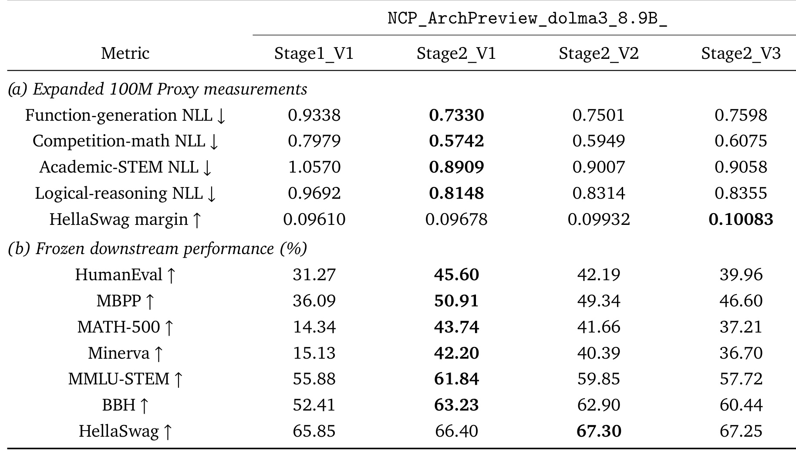
Table 11把精确代理值和冻结下游结果放在一起。三种同预算Stage-2配方中，V1在函数生成、竞赛数学、学术STEM、逻辑推理四个自由生成能力叶节点都获得最低NLL，相关下游任务也呈现V1优于V2优于V3的排序。以V1对V3为例，函数生成NLL下降约3.5%，HumanEval提高5.64个百分点；数学NLL下降约5.5%，MATH-500提高6.52个百分点。这些结果支持用固定能力代理筛选已考察配方，但自由生成以外的HellaSwag形成重要反例：选择间隔V3最高，V2次之，V1最低，下游V2为67.30、V3为67.25，二者仅差0.05个百分点，应视为领先同一档，而不是执意给出稳定名次。附录拟合中HumanEval的Stage-2决定系数接近0.999，但BBH仅0.531，说明排序一致也不保证分差具有良好的线性比例。更关键的是只有三个同协议配方点，加入Stage-1参考得到四点拟合并没有扩大同阶段比较样本；Stage-1评测配置不同，只提供跨阶段背景。该证据能支持保留能力向量做定向筛选，尚不足以校准未见模型家族的最终成绩，也不能把整份配方的变化归因于混合中的某一个数据来源。
这组代理的生成来源、提示、后缀和能力标签都在评价候选检查点之前固定，并排除无效生成，再用更严格可信子集做敏感性分析；四类自由生成能力的配方排序在该子集上保持一致，减少了结果仅由明显无效样本驱动的担忧。不过，全部轨迹仍来自单一冻结教师，教师表达习惯可能影响似然分数，对不同答案风格的模型是否公平需要额外检验。不同能力的数值范围也不相同，论文选择保留分别计量，而不是随意给代码、数学和逻辑分配权重合成一个全球分数。使用者可以按目标能力选择配方，但不能把某个配方在代码和数学上领先，写成对常识选择题也最优，更不能用只有三点的近乎完美拟合代替新配方上的前瞻验证。
4. 总结
NCP-ArchPreview提供了一个较完整的潜空间预训练证据链：把相邻词元状态压缩成连续概念，用乘积量化词表构造受约束的预测空间，再把可微概念预测因果地反馈给词元解码器。层级计算、残差路由与独立概念目标分别贡献收益，长期预训练说明这组设计能够在万亿词元规模共同运行。最稳妥的结论是，它提高了当前训练分布下的样本利用和解析计算效率，并使概念接口能够参与后续领域适配与草稿条件化；它并没有让标准词元输出消失，也没有证明所有语言能力都能由概念损失统一预测。
对结果保留四个关键限制。第一，主比较是8.94B对7B，另有同参数和同计算消融，但消融训练范围短于完整5.73T流程，仍需要完整规模的对齐终点。第二，51.3%是训练词元比例，1.74倍是计算最优拟合效率，17M适配吞吐和MAL属于其他阶段的指标，它们不能合并成一个通用加速倍数。第三，Stage-2代码和ARC-C存在负例，适配的通用平均值也不总保持，说明收益依赖数据与任务。第四，当前没有长上下文训练和完整后训练结果，无法据短概念序列推导超长上下文或复杂智能体能力。除此之外，残差路径的访存与缓存负担、代码本使用分布和长期漂移，以及不同随机种子的稳定性，都值得继续测量。
方法复现还有一个具体待核验点：正文与算法中的NCP误差归一化差一个分段平均因子，需要检查训练实现及对应权重，不能默默忽略。数值稳定性部分同样要分清主实验保留的按层Q/K归一化与单独测试的按头干预，避免把两个配置的优点拼成一份论文从未运行过的方案。对于17M适配，也应完整保留代码本与预测头的更新范围，并使用各领域对应评测检查点，不混用主表与附表的起点分数。这些不是形式细节，而是决定比较是否同口径、梯度是否同尺度的实际条件。
后续最值得安排三项验证。其一，在同参数与同真实训练成本下延长预训练，对齐数据顺序与优化配置，联合记录词元损失、目标任务分数和GPU时间，判断短期消融能否延续。其二，在多个领域混合比例下对比VQ、LoRA和全参数更新，逐任务跟踪保持能力，验证轻量接口的优势是否来自更温和的更新位置，以及何时会限制新知识学习。其三，对概念条件化草稿报告真实吞吐、首词与逐词延迟、批量敏感性和接受长度分布，检验内部表示带来的预测改善能否转化为服务收益。能力代理评估可作为筛选成本较低的配套工具，但在只有三个配方的证据基础上，应先验证新的配方与模型，而不是把高拟合度当作可迁移预测公式。
对本篇最有价值的阅读收获，是把“学会抽象”落实为一个具体的监督接口和计算结构，再用对齐实验检查它是否值得。概念并不需要人工命名才能参与优化，但它的有效性必须回到词元生成、任务表现和真实成本上接受检验。本文的正向结果足以把这条路线视为值得认真复现的基础架构候选；负向结果和附录细节则帮助确定复现时应重点检查哪些条件，防止把优化优势扩大为没有实验支持的通用能力承诺。